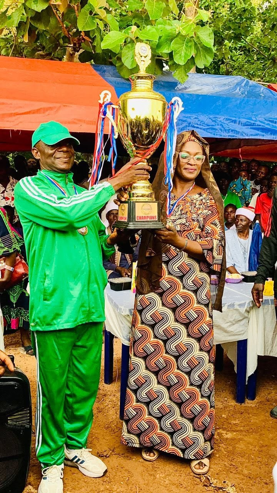
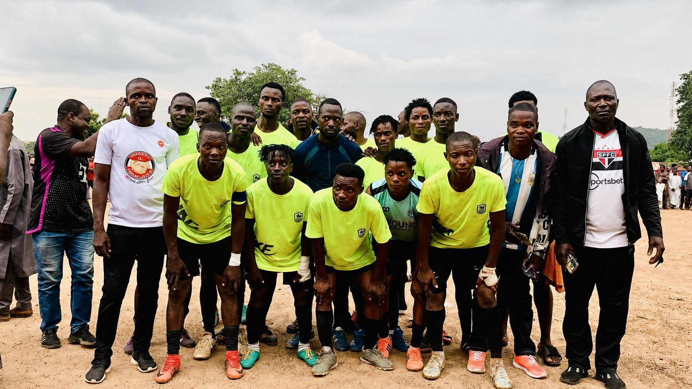
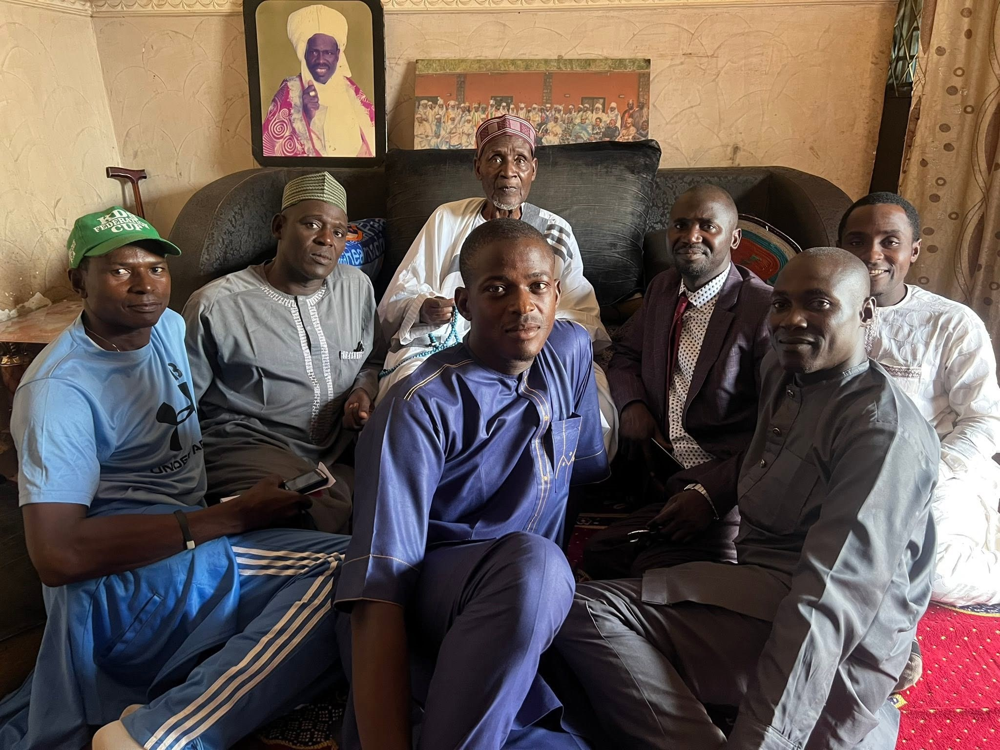
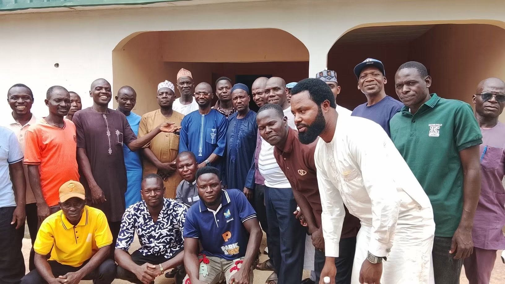
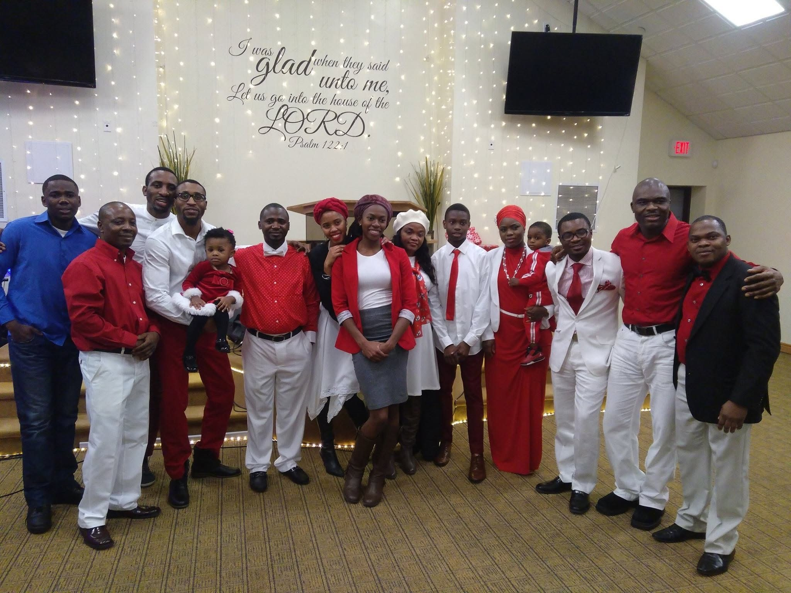
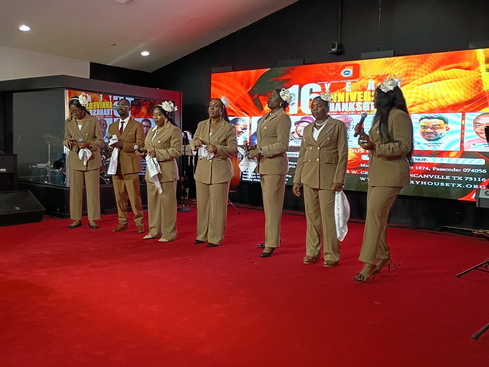
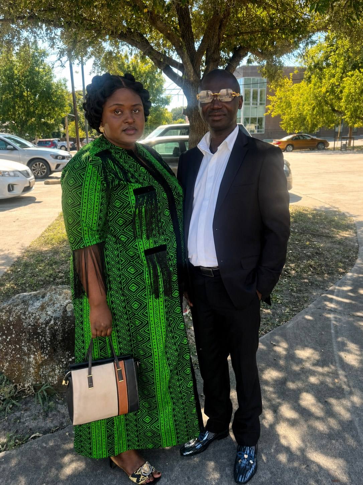
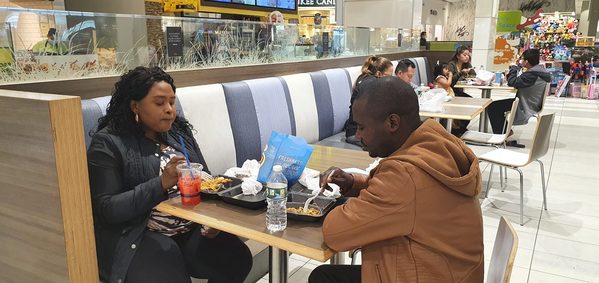
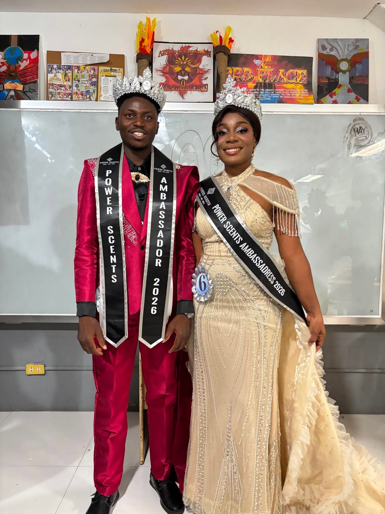

Sport
Celebrating effort
Recognition turns participation into a memory the whole community can share.
Community Faith Legacy
A life grounded in service, strengthened by faith, and made meaningful by the people and communities along the way.
The man & the journey
Some stories are best told through the lives they touch: teammates gathered on a field, neighbours meeting face to face, friends sharing the road, and a family growing through every season.
Gideon Amos’s photographs trace that kind of story. Across community programmes, worship, travel, celebration, and quiet everyday moments, a clear thread emerges—showing up with constancy, generosity, and respect.
Purpose is personal. It begins with people, then becomes a legacy.
Service is most powerful when it remains close to the people.
A guiding principle
Community in motion
Through GAADU, sport, grassroots visits, and health-focused outreach become practical ways to gather people, strengthen connection, and make service visible.

A local pitch can hold more than a match. It can make room for discipline, recognition, friendship, and the belief that every neighbourhood deserves moments worth gathering for.

Recognition turns participation into a memory the whole community can share.

Real connection begins in the room, with attention given freely and respectfully.

Progress gains strength when people are seen, included, and brought together.
Faith & fellowship
Faith is not presented here as a private footnote, but as a steady rhythm of worship, fellowship, and belonging—a place to be renewed and a reminder to live with gratitude.


Home & belonging
Beyond public moments is the life that gives them meaning: partnership, family, friendship, remembrance, and the ordinary joy of being together.



The visual journal
Community, faith, family, and the roads between them—a living archive of the people and places that shape the story.
The road continues
In service, in worship, at home, and among friends—the legacy is always human.
Return to the beginning